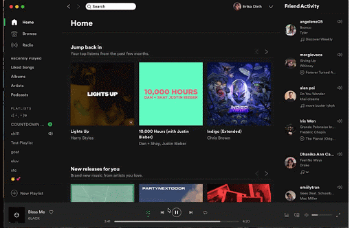
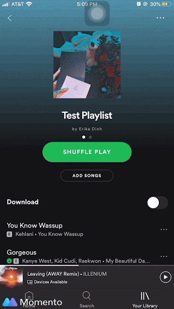
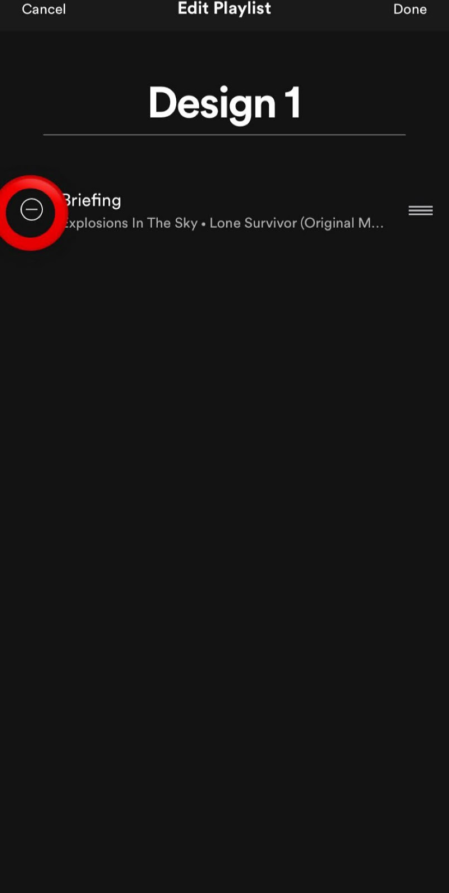
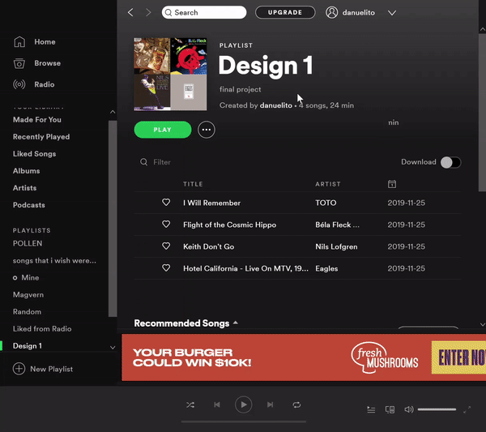
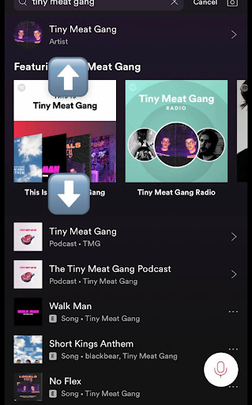
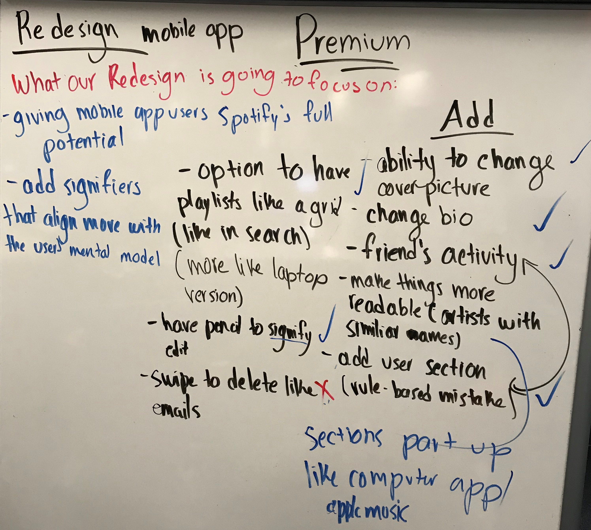

Spotify Redesign
Overview
Over the course of 3 weeks, my team and I worked together to redesign aspects of the Spotify Premium IOS mobile app and implement features found in the desktop version. We conducted user tests to see problems within the app and to see what features people wanted in the mobile version. After identifying problems, we redesigned the app to lower the amount of mistakes users made while using the app.
Team: Erika Dinh, Sophia Dominguez, Duc Le, Andreas Stathatos
Timeline: 3 weeks
Roles: Team Leader, UX designer
Problem Statement
Differences in functionality between the mobile app and desktop or browser version creates a Gulf of Execution for mobile users who simultaneously use the desktop/browser version.
How can we make the Spotify mobile app more productive, functionable, & visible so that users can utilize the app to its full potential?
Brainstorming
As a team, we created our mind map to better our understanding of Spotify’s main components such as its main mobile features, cost/pricing, and its connection to other programs. We placed a heavy focus on understanding these components because they play important roles in determining the quality of the user’s experience. We used this brain map to help us decide what features to focus on.
User Research
We conducted 12 user tests as a team on the current mobile app by asking users to conduct tasks to see where any problems occured. All of our interviewees were between the age of 18-22, and all college students from Southern California. All tests were conducted on an iPhone and user’s interactions with the app were screen recorded.
We asked pretask questions to get some knowledge on their familiarity with Spotify. If the interviewee used Spotify as their primary streaming service we asked them questions related to their amount of use and features they enjoyed. If they primarily used another service, we asked them questions relating to why they choose that service. We then had users perform tasks that ranged in difficulty.
Some questions we asked where to find the profile page, a certain playlist, to make their listening activity private and how to find a certain podcast. Using these questions we were able to discover some patterns in the user's behavior and problems they encountered.
We asked the users the following questions:
Task Questions
- Can you find the user profile?
- Can you find the playlist called “Test Playlist”?
- Can you edit the current playlist name to “Design 1”?
- Can you delete the first song on the playlist?
- Can you edit the description of the Design 1 playlist to say “Final Project”?
- Can you edit the playlist cover picture?
- Can you delete a playlist?
- Can you show me how to find all the podcast episodes for Tiny Meat Gang by TMG?
- Can you show me how to make your playlist collaborative?
- Can you show me how to share the newly collaborative playlist?
- Can you show me how to make your listening activity private?
Problems and Trends
After conducting some user tests, we analyzed our findings and found some common problems from errors users made.
The first problem we found was many users had trouble completing task #1, finding the profile page. Out of our 12 user tests, 9 of our interviewees had trouble finding the profile page in one try. Compared to the desktop version, the profile page is less visible on the mobile version, giving users a harder time.

Here, one of our interviewees had trouble finding the profile page, first incorrectly going to the library.

In comparison, on the mobile desktop app version, the same user was able to quickly and immediately go to the profile page.
The next problem we found was that 6 out of 12 users had trouble deleting a song on a playlist. All 6 users first clicked on the edit playlist instead of simply clicking on the 3 dots next each song. Once they clicked on “edit playlist”, they failed to realize that they could from there swipe on a song to delete it. 2 of the users mentioned thinking that the minus sign next to each song acts as a bullet point to list each song but had no real purpose.

Here is an example of deleting a song from the edit playlist feature, swiping on the first song to delete it from the playlist.

Circled in red is the current signifier that lets users know that they can delete a song from the playlist there.
9 out of 12 of our users mostly or exclusively used the mobile version and because of this they were unaware of some features found on the desktop app version. Out of the 9 interviewees, 7 users did not know you could edit playlists descriptions and 4 did not know you could change the cover picture of the playlist, features only available on the desktop version.

Some users did not know that on the desktop version, you could change the playlist cover and the playlist description. In this gif, those features are highlighted.
The second to last problem we identified was 6 out of 12 users had difficulty completing task 8, finding the podcast “Tiny Meat Gang”. All 6 users clicked on the artist “Tiny Meat Gang” instead of the podcast.

Here, the top arrow points to the selection "Tiny Meat Gang" the artist, which many of our interviewees clicked on instead of the podcast, which the bottom arrow points to.
The last problem we found was 7 out of 12 of our users could not complete the last task, make their listening activity private. 2 of our interviewees first tried to complete this task by clicking on the edit playlist. In their mental model, the edit playlist feature would also allow them to control features beyond editing the physical playlist. The other five went to the user profile page and clicked on find friends, expecting this button to lead them to all the social aspects of Spotify. Instead it led them to connect their Spotify account with Facebook to find their Facebook friends on Spotify.
Competitive Analysis
From personal experience, user responses and research, we created a design space to compare different streaming services. We rated them on compactness and visibility. Compactness here is defined as spacing between features and visibility is the visibility of features. In this graph, the ideal design is one with the highest visibility and lowest compactness.
In the left hand corner, we have the Spotify web page and desktop app. They both have very similar features and layouts, and have the most space to fit all the features. Due to their similarity, we placed them together. On the right hand corner, we have our redesign, being a little more compact than the original but with its features more visible. Apple music received similar ratings as our redesign as we drew some inspiration from it, and Spotify and Apple Music have similar layouts and features available. Pandora offers less features, making it a bit less compact. Soundcloud on the bottom right has the least amount of visibility in terms of features.
Alternative Designs
As a team, we proposed different redesign features and voted on them. Since we had a pretty small team, only ideas that the entire team approved of were implemented.

Here, we voted for either an implementation of a feature or the redesign of a feature.
We go inspiration from some of the competitors, like the Apple Music mobile app. We also drew inspiration from other Spotify versions, such as the desktop app and the non-Spotify premuium mobile app.
Next Steps
If we were to continue this project, we would first conduct some user tests on our final designs to see if users made less mistakes while performing our tasks. Given the feedback we would receive, the goal would be to work on creating a smoother user experience. We feel that the scope of this redesign can be further expanded to include all Spotify platforms. From there, our next steps would be the addition of Spotify on platforms such as Android, PS4, and XBOX One in our comparisons to help us achieve our ultimate goal: a universal Spotify app.
This project was completed in my first design class and was my first UX project. I learned a lot about human-centered design in this class. Overall I had a great experience working with my team redesigning this app.